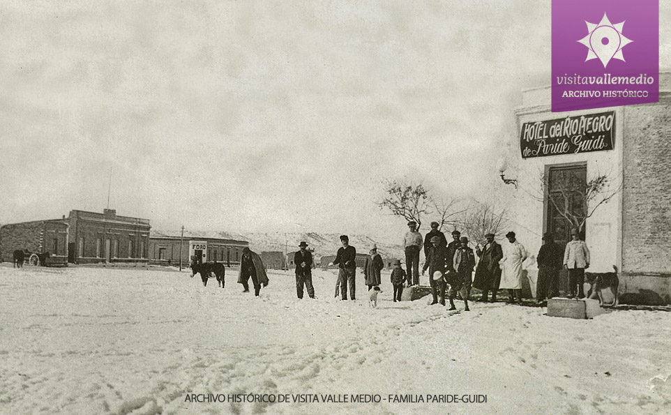
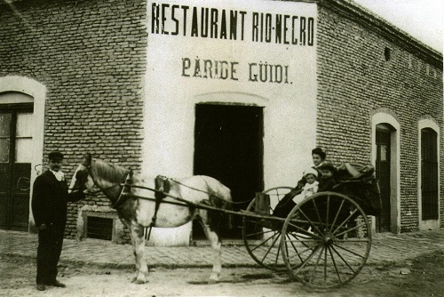

El 9 de mayo de 1900, el Poder Ejecutivo Nacional creó por decreto una nueva población en el sureste de la isla de Choele Choel. En 1901 se encomendó al ingeniero Eliseo Schieroni la mensura y subdivisión de la isla en lotes rurales de 100 hectáreas, reservando cuatro para pueblo, según ley 817, de 1.876. Finalmente se eligieron las parcelas del actual emplazamiento y recibió el nombre de Pueblo Nuevo de la Colonia Choele Choel. A fines de 1930 se comienza una construcción con la intención de poner en funcionamiento las oficinas de la Gobernación del Territorio Nacional del Río Negro, ya que Viedma había sido arrasada por una inundación en 1899 y estaba en duda que siguiera como ciudad capital. Confusiones en los envíos de correspondencia dirigida a Choele Choel, motivaron el cambio de denominación. Se le impuso así el nombre de Lamarque, en homenaje al ex juez letrado del territorio de Río Negro, doctor Facundo Lamarque, designación que fue ratificada por decreto Nº 125.126/1 del 20 de julio de 1942. El Doctor Lamarque se había hecho cargo de la nueva sede del Juzgado de Choele Choel tras la mencionada inundación que destruyó Viedma.
 